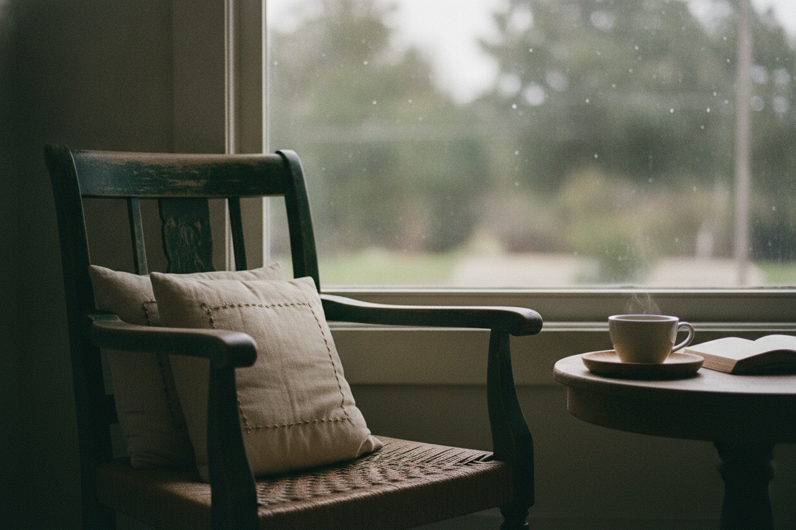
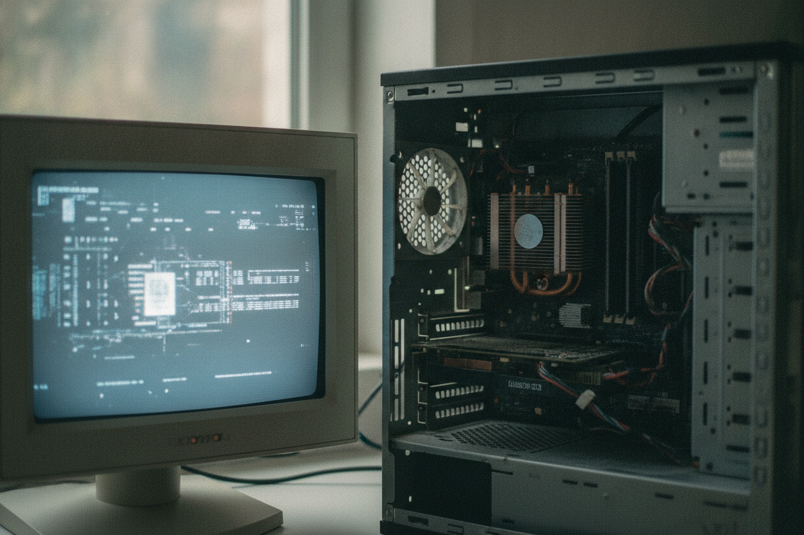
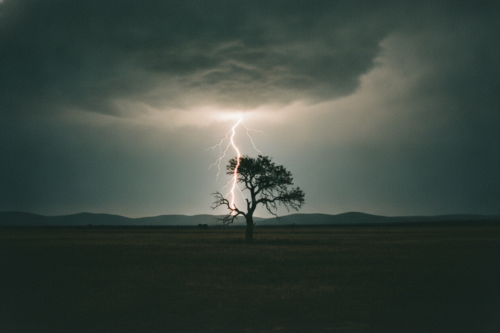
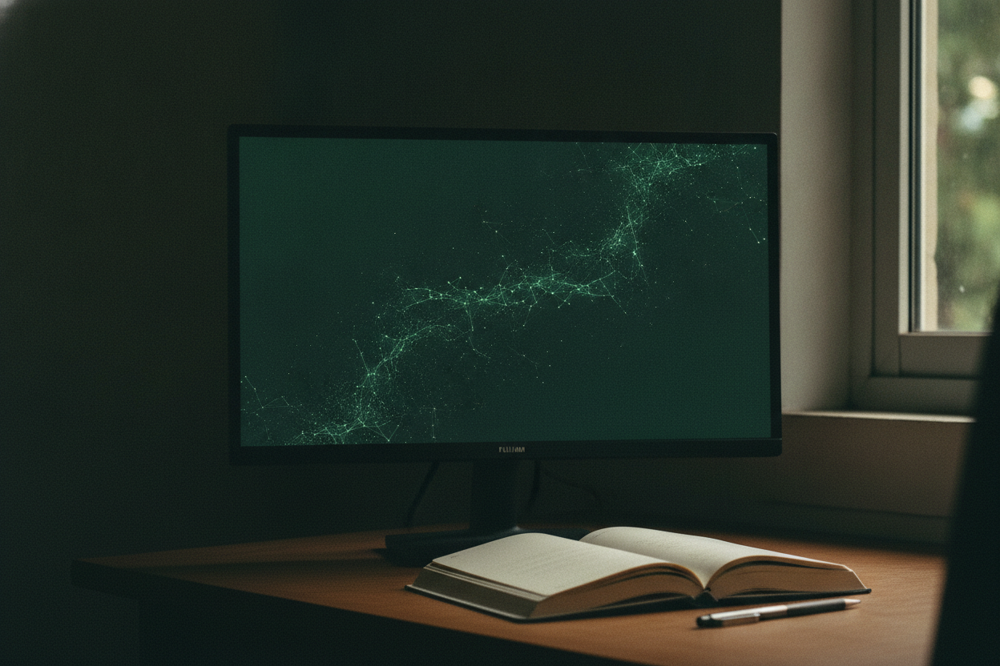

现实不是被发现的，而是被认知系统生成的。这一次，我们把"世界就在那儿"这个默认设置拆开看看。
你手里的杯子、你坐着的椅子，大概下意识就觉得它们独立于你存在——哪怕明天全人类凭空消失，杯子还好好待在桌上。
这个念头像句废话，却是我们脑子里最底层的默认设置：没人检查过，人人都在用。它有个日常名字，叫常识——常识不等于检查过的结论，它只是没被拆开过的包装。

存在不是发到你手上的起点——它是被生成的结果。
历史上最聪明的头脑，都把"存在"当成第一问题。
没有任何一种存在，能绕过你的认知结构被你直接碰到。你收到的，都是被眼睛、脑袋和说话习惯加工过一轮的成品。
比方：盯着屏幕上的高清照片找"绝对本质"，却忘了机箱里有显卡在算、有系统在调度、有像素在发光——假装后台不存在，就永远不知道照片从哪儿来。别当真有台电脑，这只是个比法。

"阻力是真的， 椅子是想出来的。"
阻力是外面来的原始刺激；从脚趾一疼到"我踹到一把椅子"，几毫秒里大脑完成了切割、圈边界、调用记忆。我们不是说世界空无一物——"椅子"这个能理解、能说出口的东西，是大脑生成的。
一团混沌要变成"一个存在"，得连闯三道关——任何一道不过，就当噪音扔掉。
最早的人类没有电磁学。那道白光夹着巨响，是无法识别的混沌——现代物理意义上的"电"，在他们的世界里还立不起来。
但人脑渴望结构。他们把它认成"从天而降的毁灭力"（识别），起名叫天火、雷神的愤怒（命名），再把它和灾难惩罚连成因果（连接）——"天神之怒"扎根了。几千年后，仪器和公式重新处理那道光：起名叫电流，连接到电子的定向移动。外面的放电现象一点没变，脑袋里的结构变了——"天神之怒"消失，"电"显现。

你在物理世界里摸不到一个叫"公司"的原子团——摸到的只有纸、电脑和人。
现实为什么不是每五秒变一次？因为搭结构要过程。时间不是背景里那把匀速的尺子——那是钟表递给我们的默认。t 记的不是刻度，是来回：结构出手一次，现实回一次话，它照着改一次。
谁深谁浅，不看日历，看来回。一个说"我有二十年经验"的人，若那二十年只是把第一年的动作重复了二十遍、从没核对过——刻度走了二十年，来回停在第一年。每天复盘的人，三个月走了九十来回。
那条走过一百次的路线，每走一遍你都在跟真实的城市核对一次：这个路口堵不堵，近道近不近。走过一百遍，不是熬过了很多时间，是对过一百次话。想快，就多碰一次现实、缩短一次核对的周期；躲开反馈，丢掉的不是时间，是来回。一个观念显得牢靠，也照这个重说：不因为它老，因为它走过的来回多到现实再也改不动它。
这个记号不是从数学或物理学搬来的，不参与计算——只是把已经说清的话抄短一点的省略写法。它不比白话更"真"，只是更短。
你的知识体系、成见、世界观，甚至"我是谁"，都是这颗脑袋被特定输入和一轮轮反馈算出来的。换输入、换反馈、换连接方式——你感知的现实跟着翻。
信不同东西、长在不同文化里的人，是真的活在不同的现实里——参数不同。互联网吵不完，不是谁掌握了现实、谁瞎了，是两套生成机制硬要生成同一个结果。而现在，AI 正在接管我们处理信息、给事物命名的机制。

客观现实不是起跑线，是终点线。三道关、三阶段、一行省略写法——接下来一周，试着重新看看你生活里那些"天经地义"。